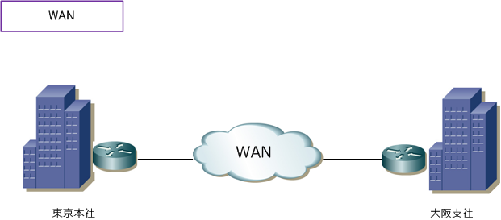
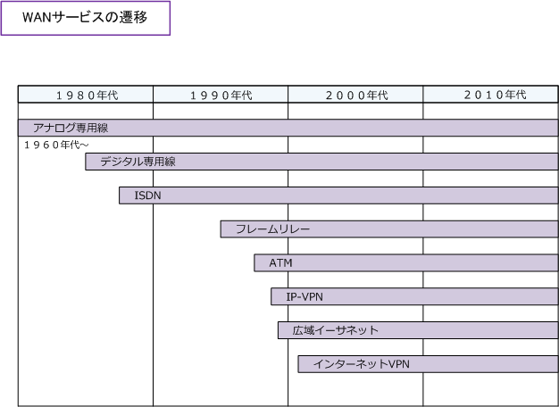
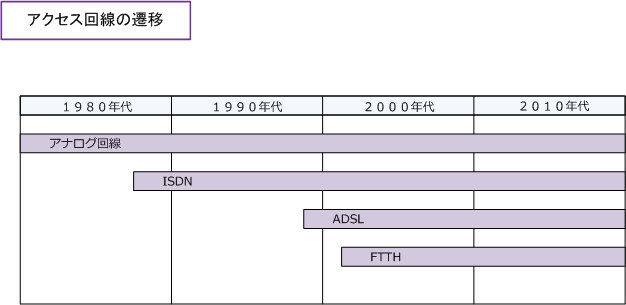

WAN
WANとは
WAN（Wide Area Network）とは、NTTなどの電気通信事業者が提供するWANサービスを利用して、 本社 ⇔ 支社間など地理的に離れた拠点のLANを相互に接続するネットワークのことです。企業などは 複数のWANサービスから回線品質やコスト等を考慮した上で最適なWANサービスを選択し契約します。 つまり企業がネットワーク機器を所有して設計/構築するLANと異なり、WANでは利用料が発生します。

電気通信事業者（キャリア）は高品質なサービスを提供するためSLA（Service Level Agreement）を 定めています。SLA（サービス品質保証制度）はサービス品質のキャリアと利用者との間の合意のこと。 具体的には、WANでのIPパケットの往復転送時間が月間平均値で10msを超えた場合や、障害発生時の 故障回復までの遅延が１時間以上発生した場合に、企業に利用料金の一部を返還する合意のことです。
WANサービスの種類
WANサービスには、従来から存在するアナログ専用線、デジタル専用線、ISDN、フレームリレー ATM（セルリレー）や最近主流な広域イーサネット、IP-VPN、インターネットVPNなどがあります。

なお、個人やSOHOがインターネットアクセス、または企業ネットワークへのアクセスを行う際に使用 するアクセス回線については、アナログ回線、ISDN、ADSL、FTTHなどの接続サービスがあります。

WANプロトコルには、フレームリレー、ATM、HDLC、PPPなどがありますが、これらのプロトコルは データリンク層（Layer2）で動作します。これらのWANインターフェースはシリアルインターフェース を使用します。一方、広域イーサネットはEthernetなのでデータリンク層で動作しますが、LAN同様に EthernetポートをONUに直接接続できます。IP-VPNはIPなのでネットワーク層（Layer3)で動作します。 IPを認識できるインターフェースなら、キャリアのサービスに合わせてどのようなI/Fでも接続できます。 ※ デジタル専用線 (64Kbps～数十Gbps) は通信に利用するプロトコルの制限がないためWANに色々なプロトコルを使用可能。
現在主流なWANサービスの名称
なお、インターネットVPNのWANサービスはキャリアのVPN機器 (設定済み) のレンタルとなりますので IPsec等の専門的な技術を知らなくても導入できます。たしかに安価に導入できますが、設定変更などの 柔軟性が乏しい（その都度費用発生）、自社で管理しにくいという観点から一般的には企業にBフレッツ などのアクセス回線を契約してもらい、企業が所有するルータにベンダーがIPsecを実装させて、自前で インターネットVPNを構築してWANにするケースが多いことでしょう。
現在のサービス名
| キャリア | WANサービス | ||
|---|---|---|---|
| キャリア | IP-VPN ( MPLS-VPN ) | 広域イーサネット | インターネットVPN (IPsec-VPN) |
| NTTコミュニケーションズ | Arcstar Universal One L3 | Arcstar Universal One L2 | OCNビジネスパックVPN |
| KDDI | Wide Area Virtual Switch L3 | Wide Area Virtual Switch L3 | マネージドサービス |
以前のサービス名
| キャリア | WANサービス | ||
|---|---|---|---|
| キャリア | IP-VPN ( MPLS-VPN ) | 広域イーサネット | インターネットVPN (IPsec-VPN) |
| NTTコミュニケーションズ | Arcstar IP-VPN | e-VLAN | OCNビジネスパックVPN |
| KDDI | KDDI IP-VPN | Powered Ethernet | マネージドサービス |